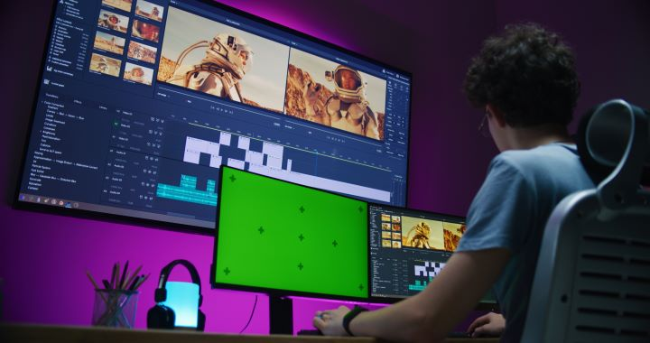

Micro-obsesiones e hiperfijaciones
Videojuegos: puedo pasar horas investigando el lore de un videojuego, todo tipo de curiosidades y el desarrollo detrás de todo lo que involucra la animación, su programación y el sonido.
Musica: disfruto mucho escuchando musica asi que he aprendido e investigado a tocar algunos instrumentos, ademas de, de vez en cuando, indagar en como gente profecional produce musica para videohjuegos o independiente
Rol: Si alguna campaña o aventura de rol de mesa me interesa suelo investigar bastante sobre su lore y sus reglas, aunque al final no termine jugando ninguna campaña

Colecciones intangibles
1) Cuando me despierto suelo prender mi computadora y mientras espero a que se reinicie y abro las pestañas que suelo usar miro redes sociales o algun video interesante que encuentre
2) Normalmente antes de dormir, me pongo en YouTube ASMR de lluvia y música tranquila, es un hábito que me quedó pero no sé muy bien por qué.
"Los sonidos repetitivos de la naturaleza y la baja frecuencia generan un espacio mental donde el ruido visual desaparece." — Apunte sobre diseño sonoro
Normalmente este es el tipo de video que suelo escuchar al dormir:Rain, Piano and Cello.
Otros sonidos agradables
Sonidos de esculpir madera
Sonido al escribir o dibujar a lapiz.
Sonidos del mar o del bosque
Rankings hiperespecíficos
Los tres mejores videojuegos indie:
- Neva - un juego de plataformas y puzles de 2024 desarrollado por Nomada Studio y publicado por Devolver Digital. Narra la historia de Alba, una joven que debe viajar con su lobo Neva a través de las cuatro estaciones en un mundo corrompido por la oscuridad.
- Planet of Lana - un juego de plataformas y puzles de 2023 desarrollado por Wishfully y publicado por Thunderful Publishing. Cuenta la historia de una joven llamada Lana y su viaje para rescatar a su hermana tras una invasión alienígena.
- Little Inferno - un videojuego de puzles desarrollado y publicado en 2012 por la desarrolladora independiente estadounidense Tomorrow Corporation.
Clasificación actualizada en la fecha: .